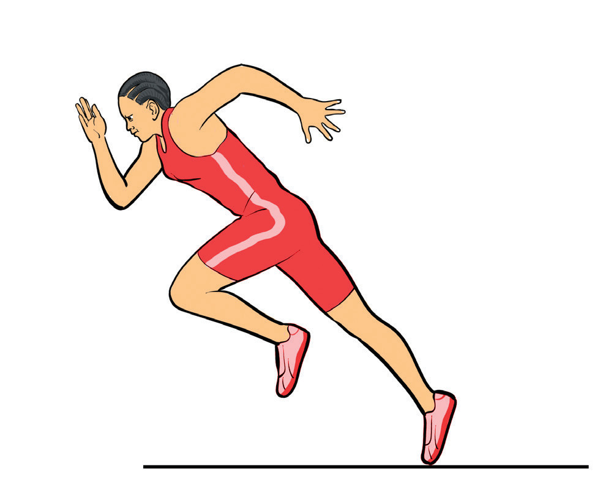
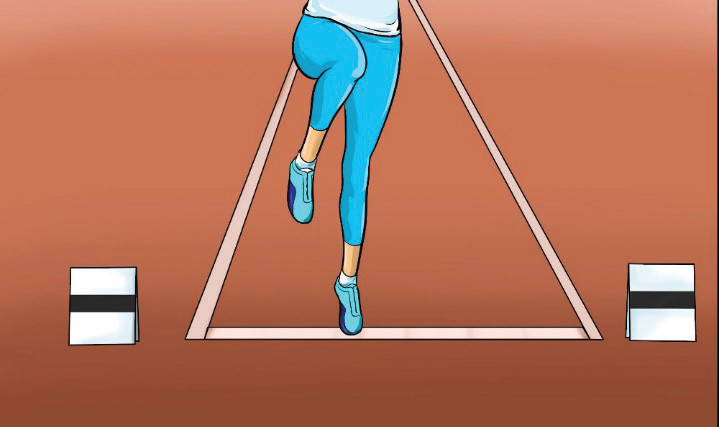

(ii)
Keep your head upright in a natural position, look forward all the time;
(iii)
Stretch your take-off leg forward and raise the other knee slightly to prepare for the hop; and
(iv)
Land your take-off leg on the ground ready for the take-off.

Take-off
The take-off occurs during the final phase of the approach run. Follow these steps to execute a successful take-off:
(i)
Slightly bend your take-off leg and strike the board with a quick, firm motion;
(ii)
Propel your body forward by extending your free leg;
(iii)
Place your take-off foot flat on the take-off board;
(iv)
Swing your free leg’s thigh horizontally; and
(v)
Bend the knee at a sharp angle, Figure 2.27.
